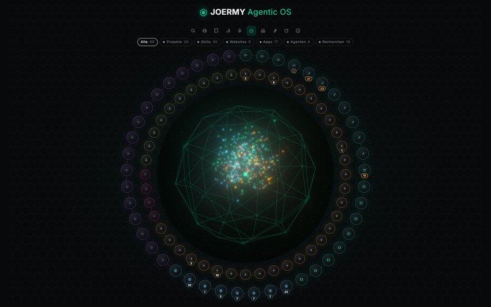

KI — 2026
Agentic OS
Eine Oberfläche für alles, was auf dem eigenen Rechner an KI läuft: Agenten, lokale Modelle, Projekte und Wissen an einem Ort.

Überblick
Das Agentic OS ist die Schaltzentrale für alles, was auf dem eigenen Rechner an KI läuft: Agenten, Sprachmodelle, Projekte, Skills und der Wissensspeicher. Ein Dirigent entscheidet, welcher Agent einen Auftrag bekommt, und eine eigene Seite zeigt, wer gerade woran arbeitet.
Die Aufgabe
Wer mehrere Agenten, lokale Modelle und viele Projekte nutzt, verliert den Überblick: Jedes Werkzeug hat ein eigenes Fenster und einen eigenen Start, und der Grafikspeicher bleibt belegt, weil niemand mehr weiß, was noch läuft.
Der Ansatz
Eine Oberfläche, die alles kennt. Programme starten ohne Konsolenfenster, laufende Websites öffnen sich per Klick, das Sprachmodell wird nach einer Pause von selbst entladen. Ein kleines Entscheidungsmodell auf der CPU verteilt die Aufträge und fragt erst nach, bevor etwas kostet.
Das System
Node.js-Server ohne Framework, Oberfläche in reinem JavaScript mit einer WebGL-Szene als Mitte, llama-server für die Sprachmodelle, dazu ein Terminal-Agent und Sprachsteuerung. Jedes Modell hat einstellbare GPU-Layer, Kontextlänge und Cache-Typen.
Das Ergebnis
Läuft als Hub des eigenen Rechners, auf einer RTX 4060 Ti mit 16 GB: Qwen3.6 35B erreicht im Tempotest 47 Tokens pro Sekunde, 55 automatische Tests prüfen den Hub.